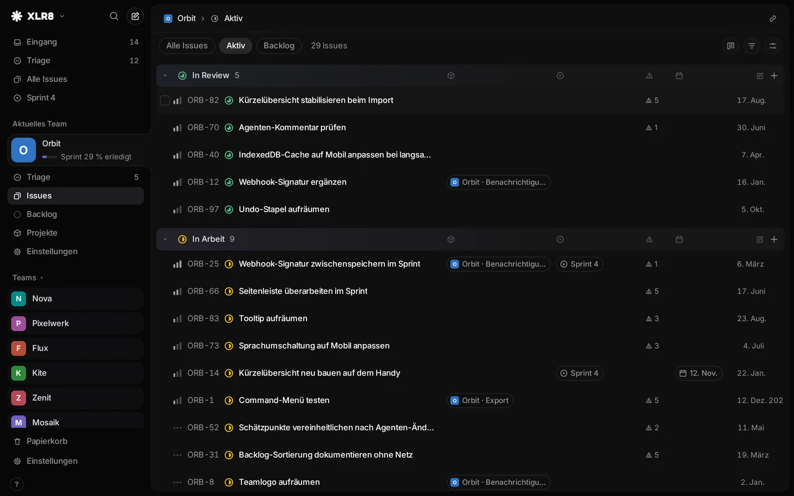
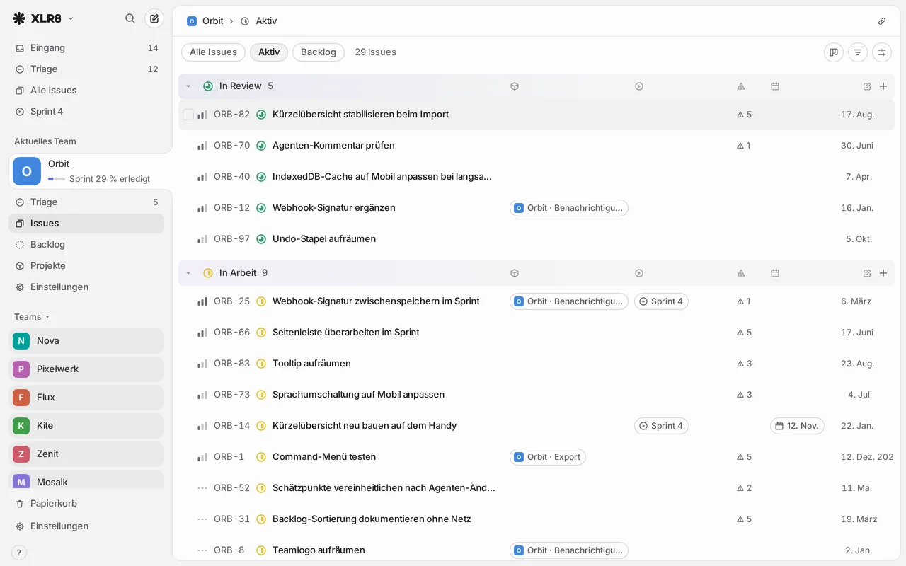

Fast with 10,000 issues
The workspace lives in memory and syncs in the background. Opening, filtering and changing issues takes 18–34 ms at the 95th percentile, measured with 10,000 issues.
Issue tracker
XLR8 keeps issues, projects and one sprint for every team in one place. It answers within a frame, works from the keyboard and is open to AI agents.


The workspace lives in memory and syncs in the background. Opening, filtering and changing issues takes 18–34 ms at the 95th percentile, measured with 10,000 issues.
JKmoveSstatusCcreate⌘K
Every action has a key, and undo covers nearly everything. The mouse is optional.
search_issuescreate_issuesset_statusadd_comment
Claude, ChatGPT and coding agents read and update issues through MCP, each with its own key or connector. The history shows which agent changed what.
Two weeks are planned once, for every team at the same time. A sprint only closes when each open issue has a decision: next sprint, backlog or cancel.
How it was built
XLR8 was built with AI coding agents. Product, design and review by Steven Hernandez, who decided what to build and how it should feel, and checked every change before it shipped.